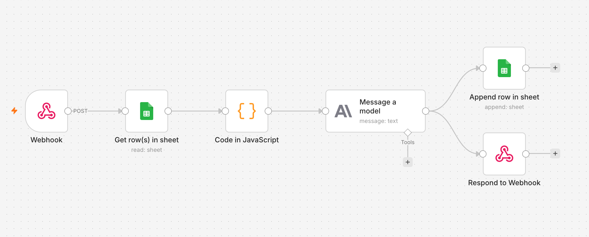

HR self-service agent
AI · Automation · n8n · Claude 2026
A proof-of-concept agentic workflow testing one specific assumption: that an employee can get a satisfactory answer to a routine HR question from an AI agent often enough that HR doesn't need to be in the loop. Built end to end in n8n — webhook, data lookup, prompt assembly, Claude, logging, response.
HR teams spend a meaningful share of their week answering the same handful of questions — how many vacation days are left, where the handbook lives, what the remote work policy says. None of it is hard to answer. All of it is repetitive enough to keep HR reactive instead of strategic.
The core assumption worth testing isn't whether AI can answer these questions — it's whether employees will actually accept the answer often enough that they don't immediately escalate to a human anyway. That's the only thing this PoC is built to find out. Everything else — polish, integration breadth, UI — is secondary until that's true.
The brief explicitly called for buying information, not building software. That shaped every decision: no authentication, no production HRIS integration, no polished UI at the backend stage. The fastest path to a real answer was to fake the hard parts and test the real part.
Two deliberate omissions worth naming. A manually populated spreadsheet stands in for a live HRIS connection (Workday, BambooHR) — wiring up a real one would have taken weeks and told me nothing about whether the agent's answers are good. And five policy documents are pasted directly into the system prompt rather than chunked into a vector database, since five documents under 10k tokens don't need retrieval infrastructure yet. Both would be wrong choices in production, and both are exactly right for a two-week test.
The workflow runs as a single n8n pipeline triggered by a webhook. Six nodes, no framework, no custom backend.

To handle real employee data, this would need several things that are deliberately absent right now.
| Gap | Why it matters |
|---|---|
| SSO authentication | Right now the employee ID is typed by hand, which means anyone can request anyone's data. Identity needs to come from a login token, not user input. |
| Live HRIS connection | The Google Sheet is a stand-in. Real deployment needs a Workday or BambooHR API call so the data stays current and is only writable by HR systems. |
| Rate limiting | An open webhook with no limits can be hit repeatedly, running up API costs with no benefit. |
| Audit logging tied to identity | The current log captures the exchange, but not a verified identity — in an HR context, auditability is not optional. |
| Vector store for policies | Pasting five documents into a system prompt works at this scale. Fifty documents would need retrieval, not inlining. |
None of this is complex in principle. All of it needs to be in place before any real employee record touches the system.
The sequence matters: identity and access control first, then a live data connection, then retrieval for the policy library, then — only once the foundation holds — additional surfaces like Slack or a richer chat interface.
The architecture itself doesn't need to change much as it scales. The same six-step shape — receive, look up, assemble context, ask the model, log, respond — holds whether the data source is a spreadsheet or an enterprise HRIS, and whether five documents are inlined or fifty are retrieved from a vector store.
Building this in n8n rather than from scratch in code surfaced a different kind of learning than I expected. The logic was never the hard part — the friction was almost always in the gap between what a node's interface implies it does and what it actually expects as input. That's a different debugging muscle than reading a stack trace: it means testing one node at a time and trusting the output panel over your assumptions about how a field should behave.
This workflow runs on Claude Sonnet 4.6, built by Anthropic.
| Good at | Answering narrowly within the data it's given, and declining clearly when something falls outside that scope. |
| Watch out for | The agent only knows what's in its system prompt. It has no way to verify the employee ID is real — that check has to happen before the model is ever called. |
| Safety | Refused over 98% of harmful requests in Anthropic's testing. Deployed at AI Safety Level 2. |
| Your role | Every response in this PoC is logged for review, not auto-trusted. A human checks the log to see where the agent's answers are reliable and where they're not. |
| Data | Inputs are synthetic and sent to the Anthropic API. No real employee data is used anywhere in this demo. |
| Full details | Anthropic Claude 4 System Card |
Built in n8n, an open-source workflow automation tool, connected to the Anthropic API. The data and policy documents are entirely synthetic, written for this demo and not drawn from any real company.